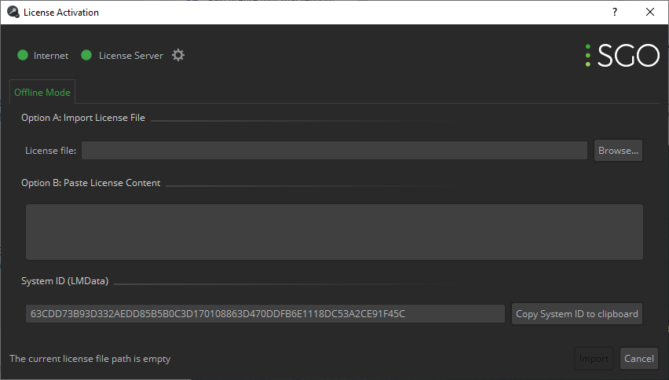

|
<< Click to Display Table of Contents >> Navigation: Installation and configuration > License management > Activating Mistika Workflows license without Internet Connection |
Users who need to activate a Mistika Technology products on a computer not connected to the internet, can follow these steps:
Copy the LMData identifier from the computer on which the Mistika Technology product is to be used (no internet connection is required):

Then go to other computer connected to Internet and paste the LMData code into the SGO Activation Tool, this way you will get a License file for the original computer. Then move the license file obtained in the previous step to the original computer and install it with the SGO Activation Tool.
Alternatively you can do the same steps at SGO website (you will find a similar procedure in your online account).
1. Using any computer with Internet connection, purchase an Activation Code at SGO, and download the Mistika software.
2. The computer to be activated (on which the Mistika software is to be used) does not need Internet connection. Simply install the software acquired in the previous step and run the SGO Activation Tool. A prompt warning about the lack of Internet connection and License Server will appear, which you can ignore. Copy the LMData line that appears in the System ID field.
3. Access a computer with Internet connection and open the SGO Activation Tool (this computer must also have Mistika software installed; although Mistika will not be used on this computer, it needs the SGO Activation Tool that comes with the software).
4. Select Advanced mode.
5. Input the LMData code that you copied in step 2, and press Continue.
6. Click on Add Activation Code, then input your Activation Code and press Validate & Activate.
7. Once the activation is completed, it will provide a License file for the original system.
8. Transfer the license to the original system and open SGO License Activation Tool>Offline. Input the license that you acquired in the previous steps.
NOTE: There is also another way to get licenses without Internet connection, which is to use floating licenses. In this method, all the activation codes are installed in only one computer, which will be the 'License Server', and all client computers will obtain the licenses from it. The client computers will not need Internet connection, only a connection to the License Server. At the same time, the license server can activate the codes either with an internet connection or by using the offline method explained above (requiring identical steps, but using the LMData of the license server).